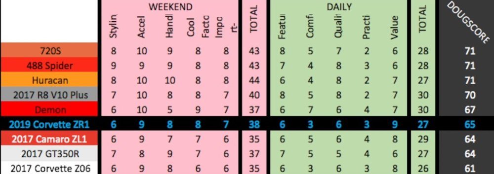

I will admit that Doug's scoring system does have its flaws but if you actually look at his DougScore chart, you can have a pretty decent grasp on how he does his scoring... I think it's a scoring system based on a "what if" — being the viewer will be (hypothetically) purchasing the car he's currently reviewing, and then he breaks it down if it'll be a good daily car or good weekend car based on what you look for in a car in the modern day. If u keep that in mind, you'll see that his chart makes a lot more sense. OF COURSE a 2018 BMW M5 will have a higher score than some clean Honda Civic Si, EVEN THOUGH he was (kinda) visibly more excited with the Civic because of all of the nostalgia, hot-hatchback heritage, and rarity (condition-wise) of the vehicle; with that said, based on (how I perceive) his scoring works he would definitely score the BMW M5 high because it will be the better buy for anybody in the market for a car RIGHT NOW.

Nostalgia, praise, and excitement will not always yield a high
dougscore because those aren't necessarily things that would be deciding
factors in a current day car purchase. So Doug might have such high
praise and excitement for a light and bare-essential Civic Si and how
fun and "go-karty" it was to drive, but obviously a Civic Si with just
the bare essentials is not something you would buy today if u could buy
an BMW M5 (even though Doug was more vanilla, rehearsed, and technical
in that review rather than excited and praiseful), but that's just my
perspective and opinion about the whole thing. I mean, he did write
columns for AutoTrader after all…
>
next article
<
previous article
<< all articles
^ home